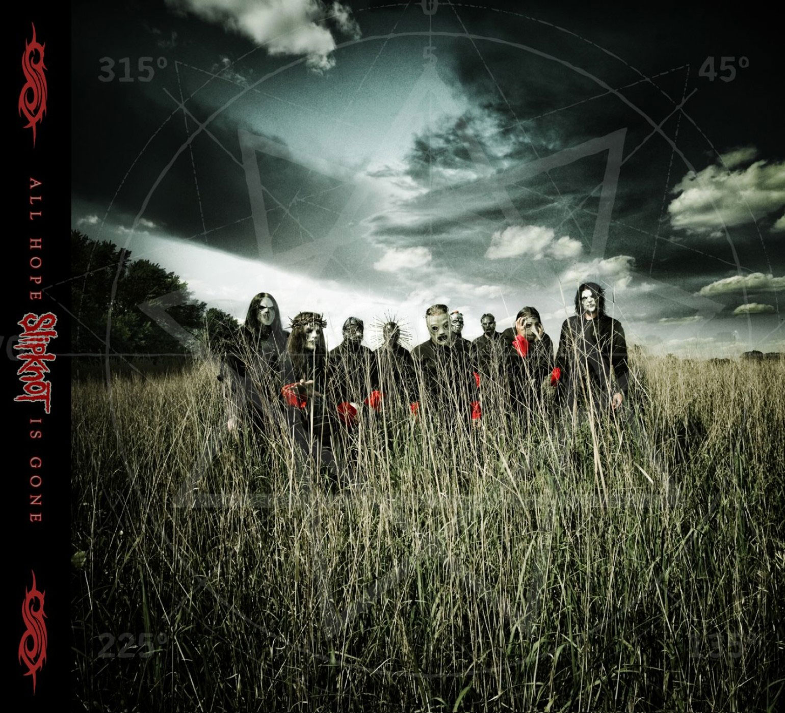
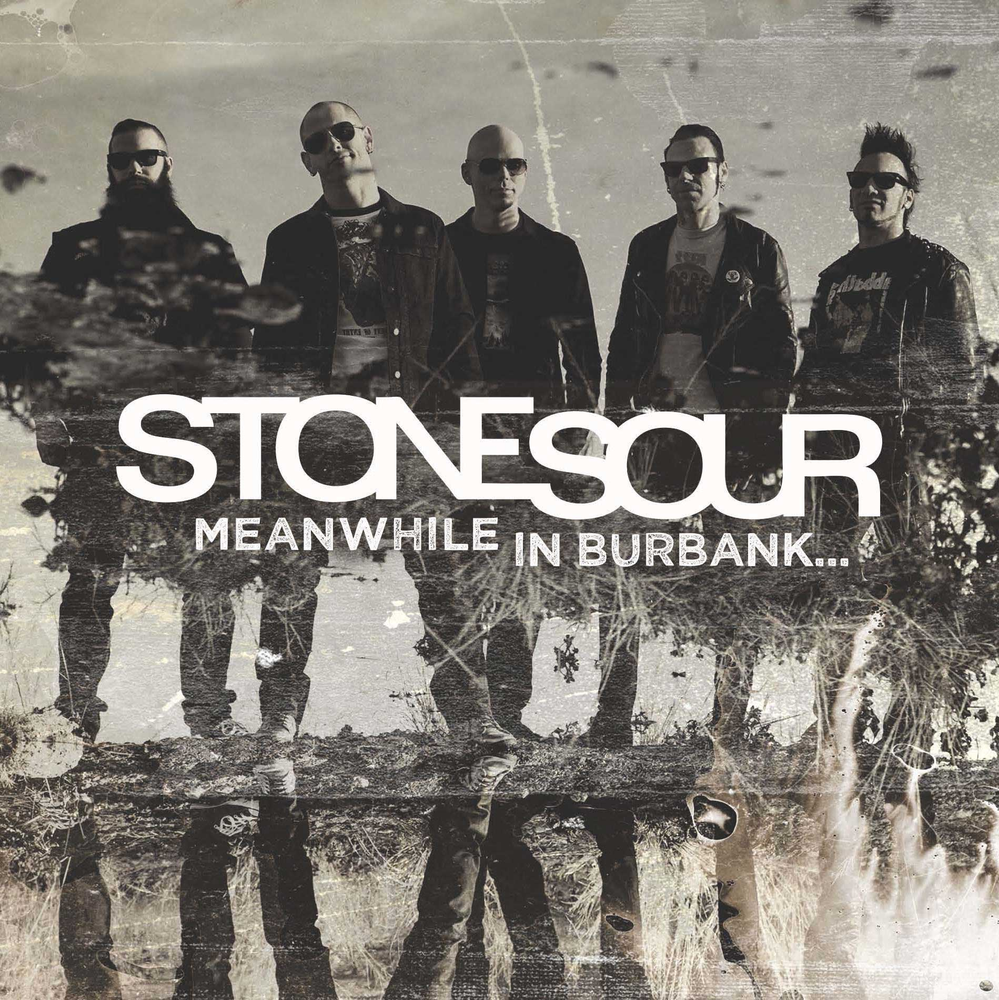
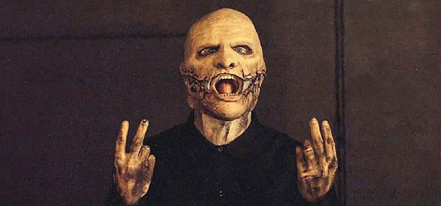

If I had to choose a particular musician to be labeled as “my favorite” it would have to be Corey Taylor. Corey is the vocalist for two bands, those being Slipknot and Stone Sour. The style of music differs between each band and his solo/guest work. Slipknot’s sound is very harsh to those outside the metal fandom. Corey will go from a quiet melodic tone in one verse to a guttural scream in the next. With 9 people playing at once it can get pretty hectic to new comers. Slipknot fits into one of the sub genres of metal music. However saying which one it fits into can lead to backlash from the “community” though the one it gets most commonly placed in is Nu metal, which became extremely popular in the 90’s and early 2000’s. Stone sour, his other band, straddles the line between metal and rock at times. Some songs are a little more rock and some are a little more metal, just depends on which you listen to. It also helps that Corey has the second highest vocal range in popular music, that being 5 1/2 octaves. He has had his share of set backs throughout his career and life, drug and alcohol problems, suicide attempts, the death of a band-mate. He managed to quit all his addictions (that we know of at least), get married, and continue to make music with each band as well as collaborate with other musicians.
I first found out about Corey when a friend sent me a link to a song through Facebook. Back when that was popular with people younger than 50. The song was “Psychosocial” it originally turned me away from them, at the time I wasn’t into that kind of music. Fast forward a few years to the youtube era of Call of Duty montage videos and I heard a familiar sound in the background. It was Slipknot’s song “Before I forget” and from that point on I was into it. Certain songs have a certain effect on me, so to speak. Their song “pulse of the maggots” is typically my hype song while something like “Gone sovereign/Absolute zero” is more of a background song to relax while I work. I had attempted to get my dad to listen to them, with my brother-in-law’s help, but he’s still neutral toward them. His friend who was visiting a the time, however, referred to it as devil worship.
Slipknot is a heavy metal band from Des Moines, Iowa. Founded in 1995 by Shawn Crahan, percussionist, and Paul Gray, bassist. They have created five total albums. Those being "Slipknot", "Iowa", "Vol.3: The Subliminal Verses", "All Hope Is Gone" and "Vol.5: The Gray Chapter".
Stone Sour is a rock band from Des Moines, Iowa. Founded in 1992, disbanded in 1997 and reunited in 2000. They have released five total albums. Those being "Stone Sour", "Come What(ever) May", "Audio Secrecy", "House of Gold and Bones-part 1" and "House of Gold and Bones-part 2".
I can’t say that I really have a favorite track, most if not all of his music I like very much. But if I had to narrow it down to one, I would have to say “Goodbye” from Slipknot’s most recent album “The gray chapter”. The album itself is the first one they made after their bass player Paul Gray died. This song just puts the final nail in the coffin, so to speak. I remember really getting interested in the band and reading about his death made me think “thats it, there won’t be any new songs now”. Four years later when the album dropped I had the only moment where I ever experienced a “fanboy” moment. Over all the years I had listened to them, found more bands to listen to through them, I find myself always coming back to hear every album again and again. Its like coming home almost, its that familiar to me. My opinion of him has evolved from being just the vocalist of my favorite band to just being my flat out favorite musician.